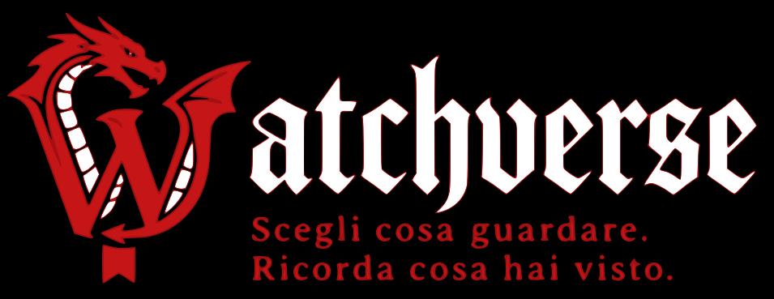

WATCH
Serie in corso
Pagina di riferimento visiva per confrontare rapidamente la resa del tema Watchverse Black. I controlli sono interattivi per verificare hover e focus da tastiera.
Versione 1.0.0 · Build 25 · H1 e titoli di pagina usano la tipografia UI standard; il font decorativo è riservato esclusivamente al wordmark del logo.

Il wordmark esteso viene usato nell’header e nella login; il marchio compatto usa lo stesso asset di favicon, profili e stato vuoto.
Passa sopra i controlli o usa Tab per verificare hover e focus.
L’operazione può essere ritentata.
I dati sono stati salvati.
clamp / 8002.5rem / 8001.5rem / 8001rem / 400-600.75rem / 700-850Breakpoint al bisogno del contenuto, minimi touch target 44px e rispetto delle safe area.